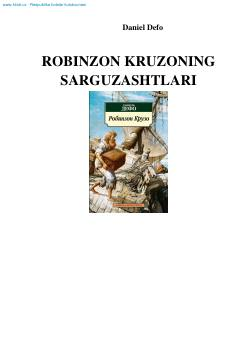

RKDengizni sevgan Robinzonning sarguzashtlari va jasorati haqida klassik asar.
Bu kitob Daniel Defoning mashhur 'Robinzon Kruzo' asarining o'zbek tilidagi tarjimasi bo'lib, dengizni sevgan yosh Robinzonning ota-onasidan ruxsatsiz uydan qochib, dengiz sayohatiga chiqishi haqida hikoya qiladi. Robinzon turli xavf-xatarlar va bo'ronlarga duch keladi, ammo dengizga bo'lgan muhabbatidan qaytmaydi. Asar sarguzasht va hayotiy saboqlarga boy klassik adabiyot namunasi hisoblanadi.